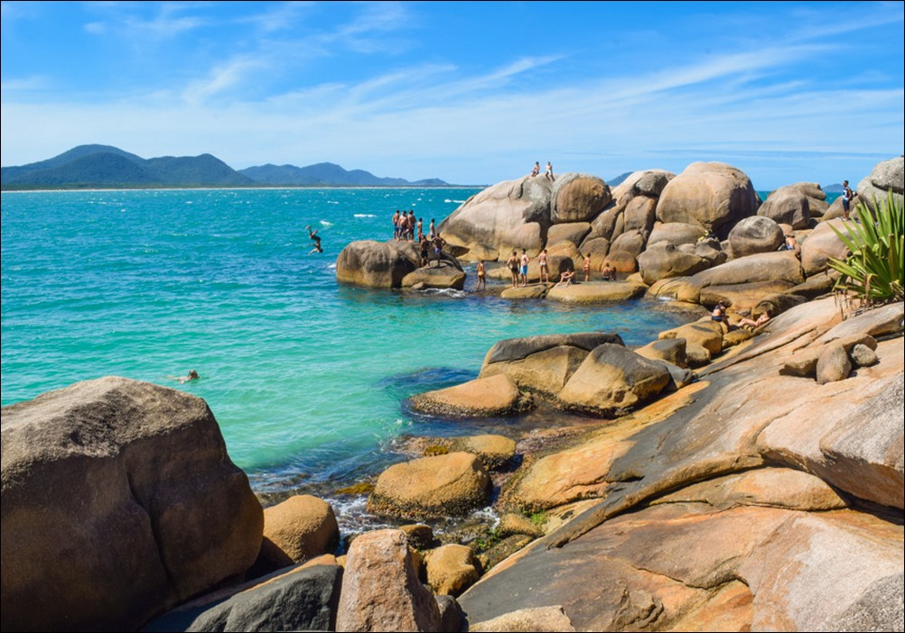
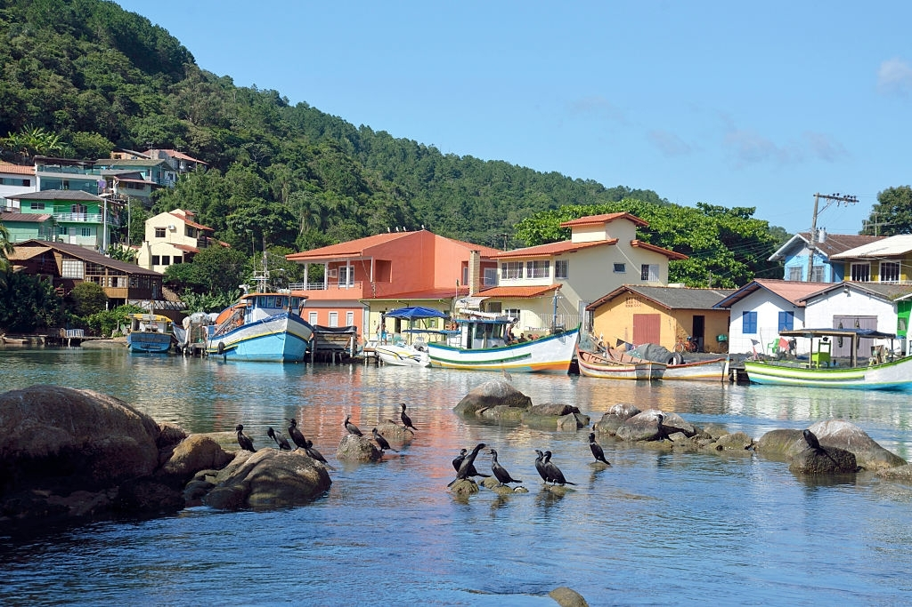
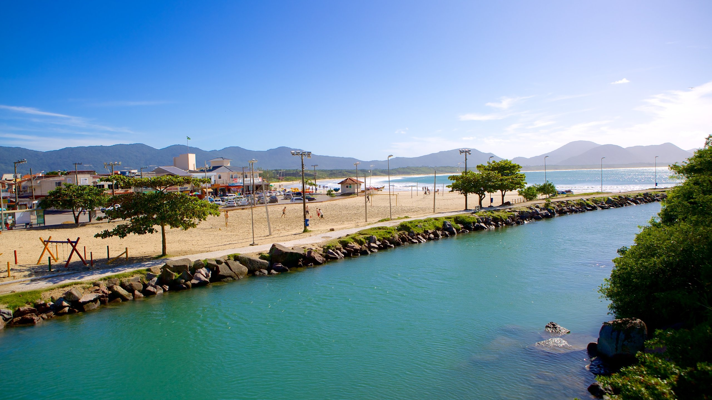
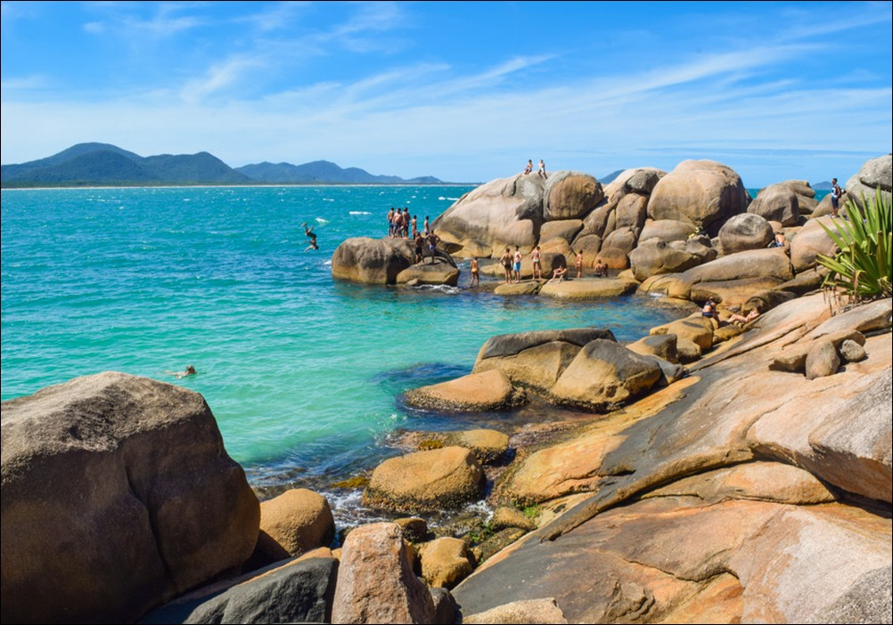
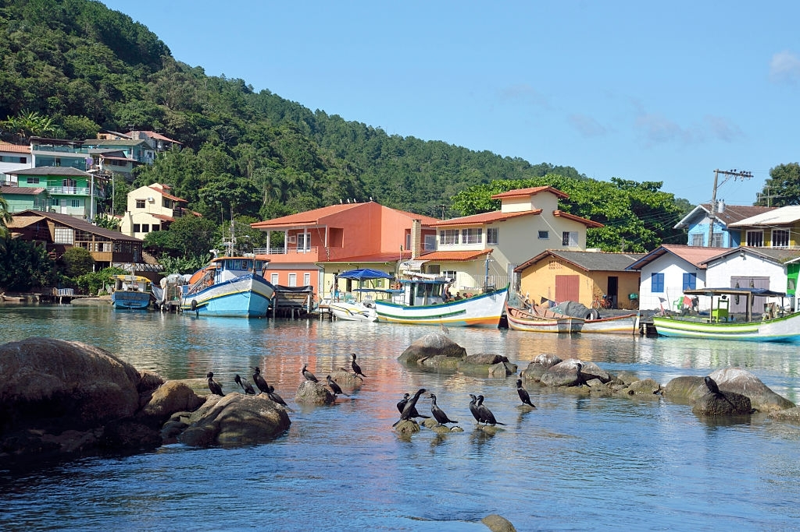
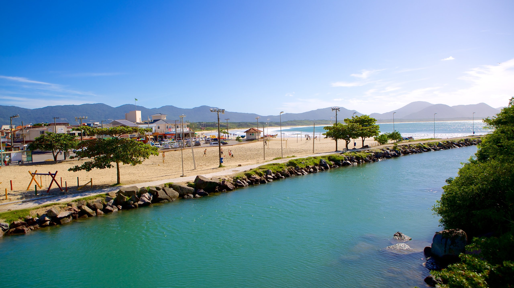

Como chegar á praia da Barra
A praia Barra da lagoa fica no meio Leste da Ilha, a 20 km da Avenida Beira Mar, no centro de Florianópolis. O acesso é pela SC-406 que corta a ilha de Norte a Sul pelo lado Leste. A partir do acesso na rodovia, andando um pouco mais de 1 km já se chega á praia. O que deixa um pouco a desejar são as ruas estreitas e a dificuldade de estacionamentos, próximo à praia.
Sobre a Barra
A praia Barra da lagoa fica no meio Leste da Ilha, a 20 km da Avenida Beira Mar, no centro de Florianópolis. O acesso é pela SC-406 que corta a ilha de Norte a Sul pelo lado Leste. A partir do acesso na rodovia, andando um pouco mais de 1 km já se chega á praia. O que deixa um pouco a desejar são as ruas estreitas e a dificuldade de estacionamentos, próximo à praia.